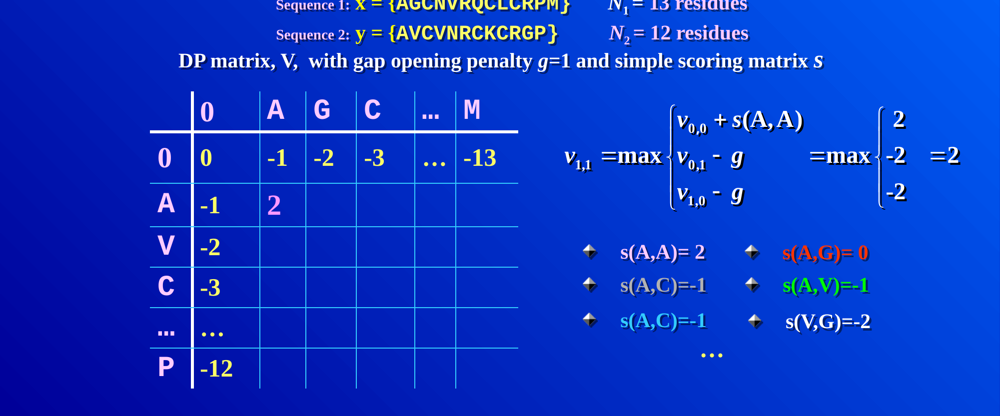
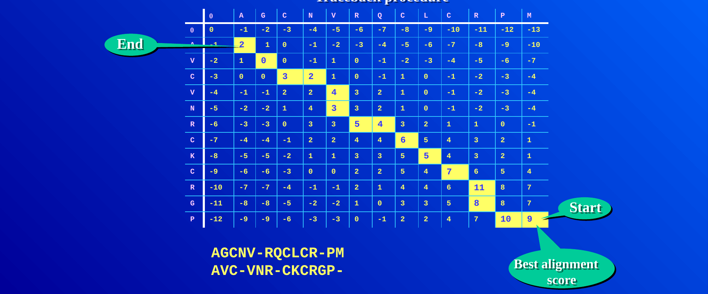
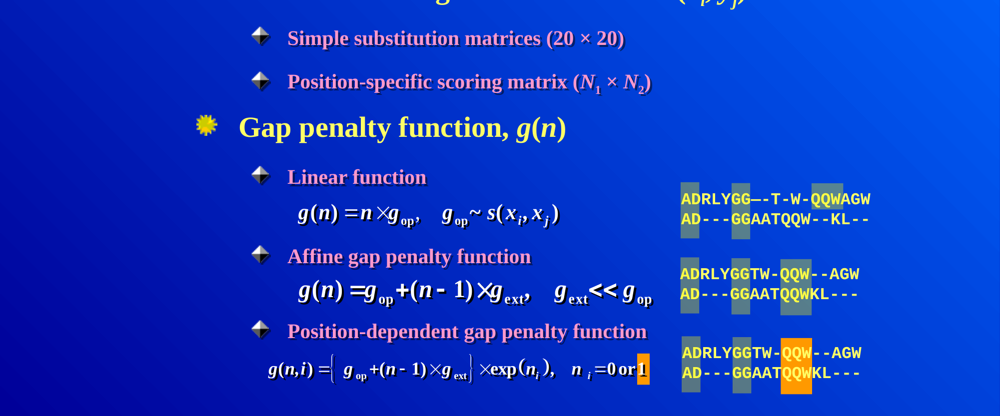
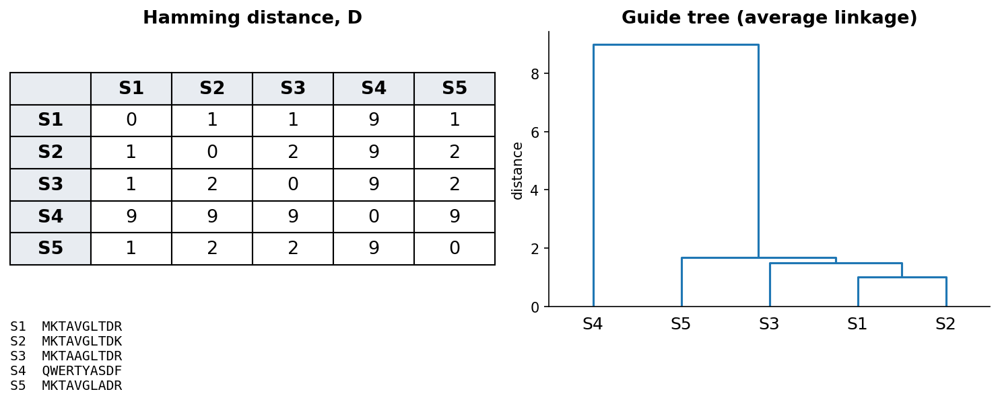
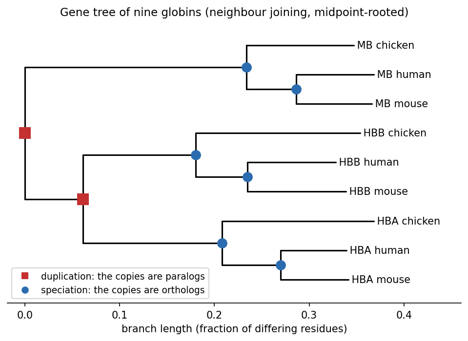
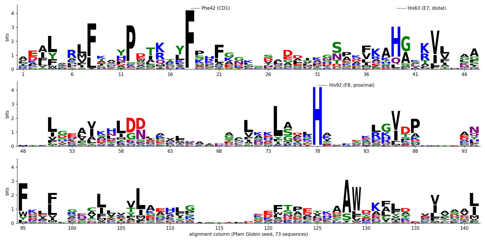

4 Session 4: Sequence Alignment
Sources for this page: Petras Kundrotas’s KB8029 lecture “Sequence Alignment” (Feb 2026) — this page follows its structure and worked examples, adapted and shortened for this book, not copied verbatim; three figures below (filling one DP cell; the completed Needleman-Wunsch traceback; linear vs. affine gap penalties) are taken directly from that lecture’s slides, and the globin gene tree was computed for this course; Dayhoff, Schwartz & Orcutt (1978), Atlas of Protein Sequence and Structure, pp. 345-352 (origin of the PAM matrices); Henikoff & Henikoff (1992), PNAS 89:10915-10919 (origin of the BLOSUM matrices); Wikipedia, Needleman–Wunsch algorithm, Smith–Waterman algorithm, Gap penalty, Dot plot (bioinformatics), Standard score, Kullback–Leibler divergence, Sequence homology, Point accepted mutation, BLOSUM, Multiple sequence alignment — CC BY-SA 4.0; the notebook’s core algorithm code is adapted from Lukas Käll’s bibook — CC BY 4.0. The guide-tree worked-example figure is original to this book, not from the lecture. The globin sequence logo is drawn for this book from the Pfam Globin family (PF00042) seed alignment, via InterPro (CC0), with logomaker; sequence logos were introduced by Schneider & Stephens (1990), Nucleic Acids Research 18:6097-6100; Wikipedia, Sequence logo — CC BY-SA 4.0.
Notebook: Session 4 — Sequence Alignment in code — the code behind this page. Download it to run it yourself.
4.1 Learning goals
By the end of this session you should be able to:
- explain why sequence alignment needs a dedicated algorithm rather than brute-force comparison;
- work a small global alignment by hand using dynamic programming;
- explain the difference between global and local alignment;
- explain why an affine gap penalty is usually preferred over a linear one;
- explain what distinguishes the PAM and BLOSUM families of substitution matrices;
- explain why a high alignment score is not by itself significant;
- read a sequence logo, and explain how the entropy of each column of a multiple alignment shows which positions are conserved;
- read a simple phylogenetic tree, and tell orthologs from paralogs by speciation and duplication.
Session 3 ended with two related sequences retrieved from the databases. This session asks the next question: which residues correspond to each other, and how much evidence does the alignment give for shared ancestry? An alignment is a hypothesis about that correspondence. It proposes which residues descend from the same ancestral position, so substitutions appear as aligned pairs, and insertions and deletions as gaps. The score of the alignment then says how plausible this proposed history is under the chosen scoring scheme. That is not the same as recovering the true evolutionary history, and much of this session is about the choices that go into the score.
4.2 Why alignment needs an algorithm
By definition, two sequences are homologous if and only if they share a common evolutionary origin. We cannot observe that ancestry directly, so we have to infer it from statistical evidence, usually the similarity (or identity) of the two sequences. Both measures require an alignment. Identity is the fraction of aligned positions with the same residue. Similarity is defined more loosely and also counts residues with shared physicochemical properties (two hydrophobic residues, say). High identity or similarity is therefore evidence for homology, not proof of it.
Since homology is defined by a common ancestor, it follows that homologs come in two kinds, depending on the event that separated them:
- orthologs are homologs separated by a speciation event, such as myoglobin in human and in mouse;
- paralogs are homologs separated by a gene duplication, such as α- and β-globin, which descend from a duplicated ancestral globin gene.
The two definitions refer to events, not to genomes, so paralogs need not be in the same genome. Human α-globin and mouse β-globin are paralogs too, because the duplication that separated the α- and β-globin genes happened before human and mouse diverged. Telling the two kinds apart therefore requires the order of events, and the section “From alignment to tree” below shows how a gene tree makes that order visible.
To measure identity, we first have to decide which residues to compare. When two sequences have the same length, this is trivial: we place one under the other and count the matches. Real sequences usually differ in length, because insertions and deletions have accumulated over evolutionary time. Where we place one sequence under the other then changes the answer dramatically. Two example globin sequences that are 21.5% identical when aligned correctly can look as low as 4% identical if placed naively. Finding the right placement is therefore the real problem.
Could we simply try every possible placement and keep the best one? Unfortunately not. For two sequences of length \(n\), allowing gaps, the number of possible alignments grows so fast that for \(n = 100\) it is already around \(10^{59}\), far too many to search exhaustively. This is why dynamic programming algorithms are used for this problem. They find the guaranteed-optimal alignment without ever checking most of the possibilities. The trick is that many candidate alignments share the same beginnings. Dynamic programming therefore solves the best alignment of every pair of prefixes once, stores it, and reuses it. Before we turn to the algorithm, it helps to see what a good alignment looks like.
4.2.1 Further reading
- Wikipedia, Sequence homology: orthology, paralogy and the other relatedness terms, in more depth than needed here
4.3 Visualising alignments: dot plots
The simplest way to see whether two sequences are related is a dot plot, and it needs no algorithm at all. We put one sequence along each axis of a grid and mark a dot wherever the row and column residues match. A run of matches then lines up as a diagonal line, which the eye picks out immediately. A long alignment shows up as one long diagonal, a repeat as several parallel diagonals, and an inversion as a diagonal running in the opposite direction. A dot plot gives no score and no optimal alignment, so it is only a fast qualitative screen. It is still used today to visualise the output of real alignments (BLAST’s web output includes one), because a picture answers “is there a match here at all, and roughly where?” faster than a score does. To get an actual alignment, and a score for it, we need dynamic programming.
4.3.1 Further reading
- Wikipedia, Dot plot (bioinformatics) — filtering/windowing techniques for noisy real sequences, beyond the simple version above
4.4 Dynamic programming: Needleman-Wunsch and Smith-Waterman
Dynamic programming builds a matrix \(V\) with one extra row and column (for handling the sequence starts), fills it in using a simple rule, and then traces back through it to read off the best alignment. Each cell \(V(i,j)\) holds the score of the best alignment of the first \(i\) residues of one sequence with the first \(j\) residues of the other. It is filled as the best of three options: extending the alignment diagonally with a match or mismatch, or opening a gap from above or from the left.
\[ V(i,j) = \max \begin{cases} V(i-1,j-1) + s(x_i, y_j) \\ V(i-1,j) + g \\ V(i,j-1) + g \end{cases} \]
Here \(s(x_i, y_j)\) is a substitution score (see below) and \(g\) is a gap penalty. In practice, filling one cell means computing all three candidates and keeping the largest. The figure shows this for cell \(V(1,1)\) of a pair of 13- and 12-residue sequences, with a gap penalty of \(g=1\):

Every other cell is filled in the same way, and only the numbers that go into the three candidates change. Worked example. The following case is small enough to do completely by hand. We align \(x = \texttt{GCAT}\) against \(y = \texttt{GAC}\), with match \(= +1\), mismatch \(= -1\) and gap \(= -1\):
| G | A | C | ||
|---|---|---|---|---|
| 0 | -1 | -2 | -3 | |
| G | -1 | 1 | 0 | -1 |
| C | -2 | 0 | 0 | 1 |
| A | -3 | -1 | 1 | 0 |
| T | -4 | -2 | 0 | 0 |
Tracing back from the bottom-right corner (score 0) along the cells in bold in Table 4.1 gives the optimal global alignment:
G C A T
G - A CHere G matches G, C is deleted, A matches A, and T is mismatched with C, for a total score of \(1 - 1 + 1 - 1 = 0\).
The same procedure works at the scale where it is actually used. The figure below shows two protein sequences of 12 and 13 residues, with the completed matrix and its full traceback path highlighted:

This algorithm, Needleman-Wunsch, produces a global alignment, in which the entire length of both sequences is forced into the result, gaps and all. Often, however, we want only the best-matching sub-region, that is, a local alignment. Smith-Waterman achieves this with one change to the same algorithm. Negative values in the matrix are reset to zero, and the traceback starts from the highest-scoring cell anywhere in the matrix (not necessarily the bottom-right corner) and stops as soon as it reaches a zero.
Which of the two to use is a biological choice, not just a mechanical one. Global alignment is the right choice when we expect the two sequences to correspond along most of their length, as two myoglobins do. Local alignment is the right choice when they may share only a part, such as one domain common to two large multidomain proteins, or a short motif inside a long sequence. Forcing a global alignment on such sequences buries the shared region under a long tail of meaningless gaps. How the gaps are penalised is therefore the next question.
4.4.1 Further reading
- Wikipedia, Needleman–Wunsch algorithm and Smith–Waterman algorithm — pseudocode and complexity analysis beyond what’s needed here
4.5 Gap penalties: linear vs. affine
So far \(g\) has been a single flat number charged per gap position, and this choice matters more than it might seem. A linear gap penalty, \(g(n) = n \times g_{\text{op}}\) for \(n\) consecutive gaps, charges the same total whether the gaps are spread out or bunched together. Evolutionary insertions and deletions often affect contiguous stretches of residues. It is therefore usually more realistic to charge more for opening a gap than for extending one. A linear penalty, in contrast, can produce implausible alignments that scatter single gaps throughout and break up motifs that are conserved as a block.
The fix is an affine gap penalty. It charges a larger cost \(g_{\text{op}}\) to open a new gap and a much smaller cost \(g_{\text{ext}}\) to extend an already open one (\(g_{\text{ext}} \ll g_{\text{op}}\)):
\[ g(n) = g_{\text{op}} + (n-1) \times g_{\text{ext}} \]
With this penalty, a single long gap costs less than the same number of gap positions scattered as many short gaps, which is the behaviour we want. The figure below makes this concrete. It shows the same two sequences aligned once with a linear penalty (top pair), where the gaps are scattered and break up the shared “QQW” motif, and once with an affine penalty (bottom pair), where the gaps are consolidated into contiguous stretches and “QQW” stays together:

4.5.1 Further reading
- Wikipedia, Gap penalty — covers this in more depth, including the position-dependent variant shown at the bottom of the figure above, which is beyond what this course needs
4.6 Substitution matrices: PAM and BLOSUM
The other ingredient of the alignment score is the substitution score \(s(x_i, y_j)\). These scores are log-odds scores, the logarithms of probability ratios from Session 1. Roughly, the score of residues \(a\) and \(b\) is the log of how often they are aligned in related proteins, divided by how often they would pair by chance given how common each residue is. A positive score therefore means that the pair is seen more often among related sequences than expected by chance, and a negative score that it is seen less often. Conservative substitutions (K and R, I and V) consequently score positively. Session 5’s profiles use the same idea, one column at a time. Two families of substitution matrices dominate, and they differ in the data and the model they are built from:
- PAM (Point Accepted Mutations; Dayhoff, Schwartz & Orcutt, 1978) is based on global alignments of closely related proteins and uses an explicit evolutionary model. The sequences are arranged into phylogenetic trees, ancestral sequences are inferred, and substitutions are counted along the branches of the tree. Matrices for larger distances (PAM250) are then extrapolated from the one for very short distances. Three quantities do the work. The frequency of each amino acid says how often it occurs at all. Its mutability says how often it was seen to change, divided by how often it could have — and the two do not track each other, which is the first surprise in Dayhoff’s paper. Dividing an observed substitution rate by what chance alone would give is an odds ratio; taking its logarithm turns “rarer than chance” into a negative number and “commoner” into a positive one, which is why every substitution matrix holds log-odds rather than probabilities. Extrapolation is then matrix multiplication: PAM2 is PAM1 applied twice, PAM250 is PAM1 applied two hundred and fifty times.
- BLOSUM (BLOcks SUbstitution Matrix; Henikoff & Henikoff, 1992) is instead based on local, ungapped alignments of distantly related proteins. Substitution frequencies are counted directly from conserved blocks of real multiple alignments, with no phylogenetic tree and no extrapolation. Each BLOSUM matrix (BLOSUM45, BLOSUM62, BLOSUM80, …) is therefore derived independently of the others.
The two families are easy to confuse, because their numbering runs in opposite directions. A higher PAM number means a more distant comparison, so PAM250 suits more divergent sequences than PAM100. A higher BLOSUM number, in contrast, means a closer comparison, so BLOSUM80 suits more similar sequences than BLOSUM45.
4.6.1 Further reading
- Wikipedia, Point accepted mutation and BLOSUM — the full derivation of each matrix family, beyond the conceptual level above
4.7 Is the score significant?
Once a substitution matrix and gap penalties are chosen, every alignment gets a score. A high score alone, however, does not prove that two sequences are homologous. The raw score depends on the sequence lengths, the substitution matrix and the gap penalties, so there is no universal threshold for “good enough”. One intuitive way to calibrate it is to compare the observed score with the scores of the same sequences shuffled, or of unrelated sequences, aligned in the same way. If the real score is far above almost all of them, chance is an unlikely explanation.
For local alignments this comparison can be made precise. The best scores of unrelated sequences follow a known statistical distribution, an extreme-value distribution rather than a normal one. Database-search tools use this distribution to estimate an E-value, the number of hits this good expected by chance in a database of this size. Session 5 explains BLAST and E-values properly.
There is also a useful rule for how long an alignment has to be before it can mean anything. Each aligned pair of residues carries a certain amount of information, measured in bits, which depends on the substitution matrix used; this is its relative entropy. Multiply it by the number of aligned residues and you have the information in the whole alignment. Roughly thirty bits are needed before an alignment is convincing on its own. The consequence is practical: a matrix built for distant relatives carries less information per residue, so detecting a distant homologue needs a longer alignment, not merely a better score.
Shuffling also gives the simplest statistic of all. The Z-score of an alignment is how many standard deviations its score lies above the mean of the shuffled ones. It is easy to compute and easy to over-trust: it assumes the shuffled scores are normally distributed, and for local alignments they are not, which is exactly what the next section is about.
4.7.1 Further reading
- Wikipedia, Extreme value theory, in its general statistical form, beyond its use here
4.8 Multiple sequence alignment
So far we have aligned two sequences, but a protein family usually has many members, and aligning more than two sequences at once is harder than it looks. Exact dynamic programming extends to \(N\) sequences, but its cost grows exponentially with \(N\), so it becomes impractical for more than a few short sequences. Practical methods therefore combine three ideas:
- Progressive alignment builds a guide tree from all pairwise distances, aligns the closest pair first, and then adds sequences (or already aligned groups) one at a time. Early decisions are never revisited, so an early mistake can persist (ClustalW is the classic example).
- Iterative refinement starts from a progressive alignment and repeatedly re-aligns parts of it, keeping the changes that improve the score (as in MUSCLE and MAFFT).
- Consistency uses the agreement among all the pairwise alignments as extra information. If A aligns with B and B with C at a position, a multiple alignment in which A also matches C there is preferred (as in T-Coffee).
Real tools often combine several of these ideas, and which works best depends on the number, length and divergence of the sequences.
The guide tree for progressive alignment is built by the kind of hierarchical clustering used on any distance matrix. Every sequence starts as its own cluster, the closest pair of clusters is merged repeatedly, and the process stops once only one cluster remains. The merge order is the order in which the sequences are aligned. The figure shows a small worked example: five toy sequences that are almost identical except for sequence 4, their pairwise Hamming-distance matrix, and the resulting guide tree. Sequence 4 merges in only at the very last step, which reflects how clearly it differs from the other four.

A guide tree is only an ordering device for the alignment and not necessarily a phylogenetic tree. It is usually built by a quick method (UPGMA) that assumes all lineages evolve at the same rate, so a fast-evolving sequence can end up in the wrong place. The third discussion problem shows such a case. To infer how the sequences are actually related, we need a method built for phylogeny. The two kinds of tree look alike but answer different questions:
| Guide tree | Phylogenetic tree | |
|---|---|---|
| Question | In which order should the sequences be aligned? | How are the sequences related by descent? |
| Built from | Quick pairwise distances, often before any alignment | A multiple alignment, with an evolutionary model |
| Typical method | UPGMA (equal rates assumed) | Neighbour joining, maximum likelihood |
| What it is | A computational shortcut | A hypothesis about evolution |
| Branch lengths | Not meant to be read | The amount of change |
4.9 From alignment to tree
A phylogenetic tree proposes how sequences are related by descent. The quickest route from an alignment to a tree uses the same ingredient as a guide tree, a matrix of pairwise distances, but combines it with a method built for phylogeny. Neighbour joining is such a method, because it allows lineages to evolve at different rates, which UPGMA does not. A tree is read as follows:
- The leaves are the sequences, and the internal nodes are inferred ancestors.
- The branch lengths show the amount of change (here, the fraction of differing residues).
- A clade is an ancestor with all its descendants.
- A tree is either rooted or unrooted. In a rooted tree the root marks the oldest ancestor, so the order of events can be read off. Distance methods give unrooted trees, and a root is added either with an outgroup, a sequence known to have branched off first, or, as here, at the midpoint of the longest path.
The notebook uses these ideas to build a tree of α-globin, β-globin and myoglobin from human, mouse and chicken:

This tree is a gene tree, and comparing it with the species tree (in which chicken branched off before human and mouse) tells the two kinds of homolog apart. The first split separates myoglobin from the haemoglobins, and the second separates α- from β-globin. Both splits are duplications, because each branch still contains all three species, so the genes must have been copied before birds and mammals diverged. Every node below them follows the species tree, with human and mouse joining first, so those nodes are speciations. Human and mouse α-globin are therefore orthologs (human α-globin differs from mouse α-globin at 14% of positions, and from chicken α-globin at 30%), while human α- and β-globin are paralogs (54% different).
Two cautions apply. First, a tree does not by itself say how much each branch can be trusted. This is usually measured by bootstrap support: the alignment columns are resampled many times, the tree is rebuilt each time, and we count how often each branch reappears. Second, real phylogenetics uses models of how residues substitute, together with maximum likelihood (for example IQ-TREE or FastTree), whereas this course only needs the concepts. The fact that sequences are related by a tree comes back in Session 8’s homology-aware splits and in Session 12’s coevolution.
4.9.1 Further reading
- Wikipedia, Phylogenetic tree, Neighbor joining and UPGMA
- Saitou & Nei (1987), The neighbor-joining method: a new method for reconstructing phylogenetic trees, Mol Biol Evol 4:406-425
4.10 Reading an alignment: entropy and sequence logos
A multiple alignment of a whole family is too large to read row by row, so we need a way to summarise it. What matters is how each column varies. A position where every sequence has the same residue has been conserved through evolution, usually because it matters for structure or function. A position with many different residues, in contrast, is free to change.
Session 1’s entropy puts a number on this variation. For the residue frequencies \(p_a\) in a column, the entropy is
\[ H = -\sum_a p_a \log_2 p_a \]
It is 0 bits for a fully conserved column and at most \(\log_2 20 \approx 4.32\) bits for a protein column where all 20 amino acids are equally common (\(\log_2 4 = 2\) bits for DNA). The column’s information content is the distance from that maximum, \(\log_2 20 - H\), so it is high for conserved columns and near zero for variable ones. (This is the simple version, which assumes that all amino acids are equally common in the background. Logo programs often correct for background frequencies and for small samples.)
A sequence logo (Schneider & Stephens 1990) turns these numbers into a picture by drawing each column as a stack of letters. The height of the stack is the column’s information content, and the height of each letter within the stack is its frequency. A tall stack with one big letter is therefore a conserved position, and a low stack of many small letters is a variable one. In the logo below, gaps also lower the stack, because the height is multiplied by the fraction of sequences that have a residue in that column.
The logo of the Pfam globin family, 73 globins from bacteria, plants, worms, insects and vertebrates, shows how few positions are conserved across the whole family:

Only two columns are identical in all 73 sequences. One is His92 (F8, the “proximal” histidine, whose side chain binds the haem iron), and the other is Phe42 (CD1, which packs against the haem). A third, His63 (E7, the “distal” histidine, on the oxygen-binding side of the haem), is His in 73% of the sequences. The average column carries only 1.2 bits. The rest of the fold is held together by positions that stay hydrophobic (the black L, V, I and F stacks, often with several residues sharing a column) rather than by identical residues. An alignment can therefore point to the residues a protein cannot do without. It also shows how the same globin fold is kept even though most pairs of sequences in this alignment share fewer than 20% of their residues.
A motif without a family: signal peptides. Logos are not only for families of homologs. Many proteins that are secreted, or that end up in a membrane or in an organelle of the secretory pathway, begin with a signal peptide. This short N-terminal sequence, typically 15-30 residues long, sends the new chain into the secretory pathway, and it is cut off once it has done its job. The signal peptides of unrelated proteins share no ancestor and cannot be aligned residue by residue, but they share a design. The first collections, of a few dozen sequences around 1980, already showed a positively charged N-terminus, then a hydrophobic stretch, then a more polar end. The three parts are now called the n-region, the h-region and the c-region. We can draw the design as a logo if we line the signal peptides up on the one position they all have, the cleavage site, instead of aligning them by homology:
The logo shows two kinds of signal. In the h-region no column is conserved, but every column leans the same way, towards hydrophobic residues and above all leucine. What matters there is a property of a whole stretch, not a residue at a given position. Near the cut, in contrast, two single positions stand out. Positions −3 and −1 carry small, uncharged residues (mostly alanine, also glycine and serine), while position −2, between them, is free. This is the (−3, −1) rule, found in 1983 in a collection of 78 signal peptides (von Heijne, Eur. J. Biochem. 133:17). The enzyme that cuts, signal peptidase, needs small side chains at these two positions. The positively charged n-region is blurred in the logo, because signal peptides differ in length, so the left-hand columns mix residues from different regions. It is clearest in bacteria (K and R).
Like a family’s logo, this description can be turned into a score (Session 5’s PSSM). In 1986, von Heijne built a position weight matrix for positions −13 to +2 around the cleavage site (Nucleic Acids Res. 14:4683). The signal peptide comes back several times in the course. Session 7 compares this weight matrix with a neural network, Session 8 uses the hydrophobicity of the h-region as a feature, and Session 11 lets recurrent networks find the regions by themselves.
Two practical notes apply to logos. With few sequences, the frequencies are noisy and a column can look conserved by chance, so logo programs often apply a small-sample correction. Closely related sequences are also over-represented in most alignments, so real tools weight the sequences as well.
A multiple alignment is therefore more than a picture, because each column gives a distribution of amino acids. Session 5 turns these distributions into position-specific scores.
4.10.1 Further reading
- Wikipedia, Multiple sequence alignment — additional methods and applications, e.g. profile HMMs, which Session 5 picks up in full
- von Heijne (1990), The signal peptide, J. Membr. Biol. 115:195, a short review of the signal-peptide design
- Wikipedia, Sequence logo; Schneider & Stephens (1990), “Sequence logos: a new way to display consensus sequences,” Nucleic Acids Research 18:6097-6100
4.11 The course notebook
notebooks/session04-alignment-in-code.ipynb implements Needleman-Wunsch and Smith-Waterman from scratch, adapted from Lukas Käll’s open-access bibook (CC BY 4.0). It starts with amino-acid sequences and a simple identity scoring scheme, in which a match scores +1 and any mismatch or gap −1. This is the \(V(i,j)\) recurrence above, with the identity matrix standing in for \(s(x_i, y_j)\).
Rather than presenting a finished matrix, the notebook fills a small worked example one cell at a time, with the reasoning printed out. The example is a real HBB fragment aligned against a hypothetical mutated variant of it. You then complete a partially filled matrix yourself before the real one is revealed, and the traceback is walked through in the same step-by-step way. Both halves of the algorithm thus appear as a sequence of small decisions rather than as a finished picture.
The notebook then replaces the flat identity scheme with a real substitution matrix, the PAM250 matrix from the “Substitution matrices” section above, loaded from Biopython rather than typed in by hand. With it, the notebook compares global and local alignment of two real globin fragments (from HBB and myoglobin) that share one conserved motif but differ elsewhere. This makes two things directly visible: the practical difference between the two algorithms, and the effect of a graded substitution matrix compared with a flat identity scheme. Finally, the notebook builds the globin gene tree of the section “From alignment to tree” by neighbour joining. Open it in Google Colab via the badge at the top of the notebook page to edit and run it yourself.
4.12 Check your understanding
The questions below give immediate feedback and cover the sections above. They are in the same style as the course’s live in-class peer-instruction quizzes, and the full question bank is in quizzes/session04.md in the repository.
4.13 The lab
The lab has four steps, all reached through notebooks/session04-lab.ipynb:
- By hand: fill in a small Needleman-Wunsch dynamic-programming matrix and trace back the optimal alignment yourself, on paper. This time you use a real substitution matrix (BLOSUM62) instead of the course notebook’s flat identity scheme, on two real protein fragments that are not used anywhere else on this page. The lab notebook checks your work one row at a time rather than computing it for you.
- In code: see how the score and the alignment from Step 1 change with different gap penalties and substitution matrices. A real search of the Swiss-Prot database, sent to EMBL-EBI’s HMMER server through its web API, then shows the same kind of sensitivity in a genuine E-value. With the wrong matrix, real relatives are not found at all.
- In code: build and visualise a small, real multiple sequence alignment. This makes the progressive strategy from the section above concrete, on three short real windows from proteins used throughout this course.
- By hand, then in code: work out the entropy of three columns of that alignment by hand. Then draw the sequence logo of the Pfam globin family, map its most conserved columns onto human HBB, and (optionally) see how few sequences it takes to be fooled by chance.
When all four steps are done, answer the Session 4 lab quiz on Canvas using your own results.
4.13.1 Submitting this lab
This lab is administered through Canvas, not through this book. See the course’s Canvas page for the current quiz, the deadline and how to submit.
4.14 What’s next
Sequence alignment infers which residues correspond from the sequences alone, and Session 6 asks the same question directly in 3D, with structure alignment. Before that, Session 5 takes up two problems that this session leaves open. First, exact dynamic programming such as Needleman-Wunsch does not scale to searching a new sequence against an entire database, and that is what BLAST’s heuristic is for. Second, once we have many aligned sequences rather than two, we can build a profile from them.